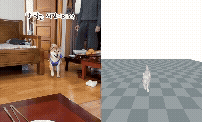
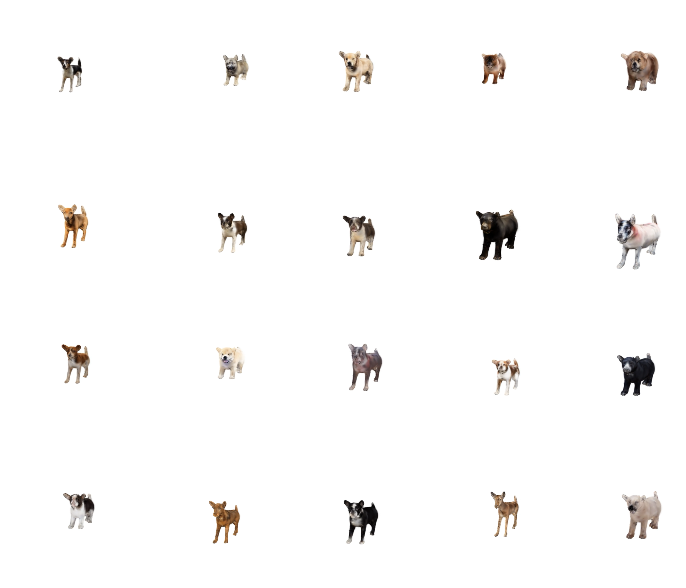
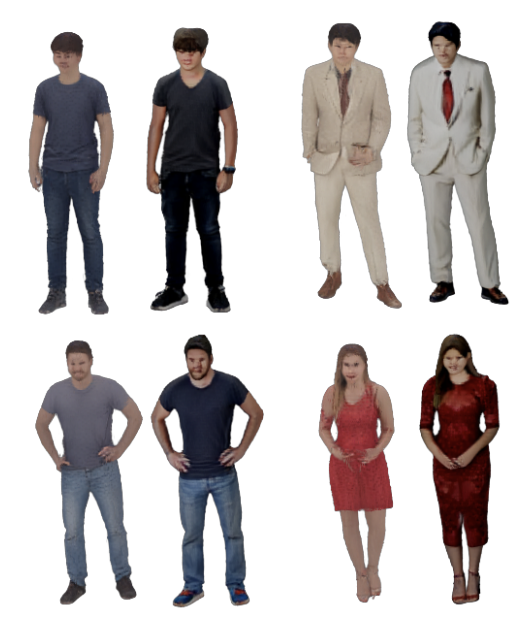

From reconstruction to embodied characters.
I am a Ph.D. student at UNIST working on dynamic 3D/4D human and animal understanding. My work focuses on reconstructing, representing, and eventually animating humans and animals as dynamic embodied agents.
The broader motivation is to move from passive 3D reconstruction toward interactive living representations: characters that can be reconstructed, animated, simulated, and used in embodied AI systems.
Perceive
Recover shape, appearance, pose, and motion from images or videos.
Represent
Build neural, Gaussian, or structured body representations for dynamic agents.
Animate
Make bodies controllable, temporally coherent, and physically plausible.
Interact
Connect bodies with behavior, language, memory, and embodied AI systems.
Animals are a hard testbed for general 4D reconstruction.
Humans have strong datasets, parametric priors, motion capture pipelines, and evaluation protocols. Animals are much less standardized.
If a method can handle non-human articulated bodies in the wild, it is closer to robust real-world embodied perception.
Large variation
Animals exhibit large inter-species and intra-species differences in anatomy, proportion, and appearance.
Contact-rich dynamics
Animal motion involves locomotion, balance, ground contact, deformation, and highly non-rigid behavior.
Weak supervision
Dense annotations and controlled multiview data are harder to obtain, especially for in-the-wild videos.
My projects as a connected research thread.
These projects are not isolated artifacts. I view them as steps toward dynamic, animatable, and eventually physics-grounded human and animal representations.

In-the-wild 4D animal reconstruction
Dynamic animal reconstruction from realistic videos with sparse views, unknown motion, occlusion, and limited supervision.

Neural / Gaussian animal representation
Moving from mesh-only thinking toward renderable, animatable, neural representations for animals.

Category-specific animal body reconstruction
An entry point into animal 3D reconstruction, especially dogs as a challenging and meaningful category.

Transfer and limits of human-centric priors
Learning from human avatar literature while asking what must be rebuilt for non-human bodies.
The five pillars I keep returning to.
My interests are broad, but they converge on a single direction: lifelike embodied human and animal AI characters.
Dynamic reconstruction
Recover not only shape, but time, motion, deformation, and interaction from sparse or in-the-wild inputs.
Shape and motion
Develop priors and representations that handle non-human anatomy, locomotion, fur, and weak supervision.
Rendering and generation
Use neural and Gaussian representations to bridge appearance, geometry, animation, and controllability.
Grounded motion
Move from visually plausible motion to physically plausible behavior: contact, balance, forces, and control.
AI characters
Connect body representations with behavior, voice, memory, language, and interaction.
Research OS
Use structured notes and AI-assisted workflows to compound research taste, execution, and long-term direction.
Ideas and labs that shape my research taste.
This map is intentionally selective. It is not a complete bibliography; it is a public view of the ideas I keep returning to.
Scene representations and controllable 3D
Neural and Gaussian representations reframed geometry and appearance as learnable structures that can connect reconstruction, rendering, generation, and control.
Performance capture and animation
Human avatar research provides strong tools for pose, deformation, and controllable rendering, while animals expose different assumptions and failure modes.
Reconstruction that can move
Many reconstructed motions look visually plausible but physically unstable. Contact, force, control, and dynamics are essential for embodied characters.
Useful representations
Robotics forces representations to be useful, not only visually impressive: latency, sensors, actuation, safety, and control all matter.
Questions I expect to keep returning to.
These questions help me convert broad vision into concrete research problems.
- How can we reconstruct animals in 4D without dense supervision?
- What physical priors are useful for non-human articulated bodies?
- Can human motion models transfer to animal motion and human-animal interaction?
- What representations best support animatable, controllable animal avatars?
- How can 3D/4D reconstruction become a body layer for AI agents?
- How can neural rendering, physical simulation, and control be unified for embodied characters?
Physics-grounded 4D animal reconstruction from in-the-wild videos.
This is the focused visiting-research direction I am currently most interested in.
It builds on my animal 3D/4D reconstruction background, connects to neural representations and dynamic reconstruction, and introduces physical constraints such as contact, locomotion, balance, and plausible motion.
- 4D neural or Gaussian animal representation
- Learned or differentiable physical constraints
- Contact and ground-interaction modeling
- Motion plausibility priors
- Cross-category or cross-species evaluation
A concrete bridge between animal 4D reconstruction and embodied character modeling.
The goal is to produce a focused research project rather than merely describe a broad vision.
Curated, not private.
This page is a public layer derived from a private knowledge system. It intentionally excludes private life context, raw logs, application strategy, unpublished details, and agent internals.
Personal relationships, emotional logs, raw chat transcripts, private strategy notes, credentials, local file paths, and confidential technical details.
Internal vision phrases become research-facing language: “lifelike embodied human and animal AI characters.”
Research questions, public projects, public papers, public talks, high-level values, and sanitized long-term vision.